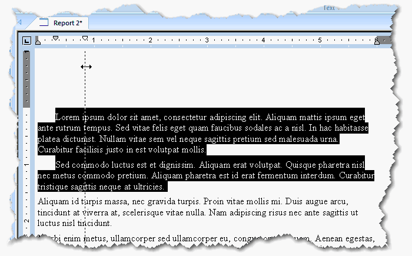

You can set left, right, and first line indents for individual paragraphs. These
settings are saved with the report.
To set paragraph indents:
Select the paragraph(s) to change the indents.

To change the first line indent, drag the marker
at the top left of the ruler.
To change the left indent, drag the marker on
the bottom left of the ruler.
To move both the left and first line indents,
drag each marker separately.
To change the right indent, drag the marker on
the bottom right side of the ruler.
Tip: To create an indented line, drag the top left marker to the
right of the left indent. To create a hanging indent, drag top left marker
to the left of the bottom left indent marker.